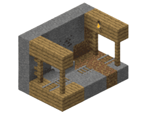
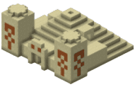
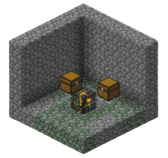
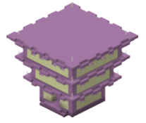
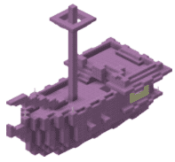
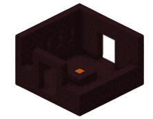
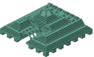
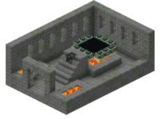
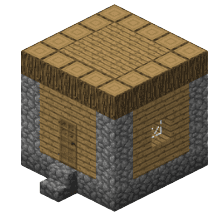

The place that I wish to go in the whole world is the world of minecraft.
Visit minecraft's websiteMinecraft is a sandbox game which you can do everything from killing giant dragons to three-headed soul monsters while fighting for your survival.
In minecraft, we have a magical crafting table that lets us craft even pickaxes even just by putting them in an order. You can go to different
- villages
- temples
- shipwrecks
- ruins
- cities
- even dimensions
| Structure | Explanation |
|---|---|
|  |
Contains chests with ores, as well as useful materials spread throughout its tunnels. They are typically common underground and can generally be found cutting through other cave systems. Mineshafts are constructed of long tunnels with broken up railroad tracks and sometimes make locating ores and other cave systems easier. |
|
This structure is the home of the Piglins and Piglin Brutes. It houses multiple loot chests and tons of golden blocks. |
|
|  |
A pyramid-like structure found exclusively in deserts, which constitutes of two towers and a more wide, central region inside. The player may loot a number of chests that are located in a deep pit in the center of the pyramid, but must be careful to not detonate the TNT at the bottom in order to do so. |
|  |
Contains two chests with useful loot and a mob spawner. Dungeons are very small and rare, found only underground. Chests can contain anything from bones to golden apples, even records. |
|  |
Tall, tree-like structures that generate on the outer islands of the End, which contain mobs such as shulkers, as well as chests with particularly valuable loot. |
|  |
Structures resembling a pirate ship that may generate outside of End cities. They contain immensely valuable loot, including an elytra and a dragon’s head. |
|  |
Houses several mob spawners (particularly blazes), and rooms where the player can collect nether warts. |
|  |
A large monument generated entirely underground, with numerous water filled rooms protected by ocean guardians and elder guardians. They may include chests and a treasure chamber, which has 8 gold blocks encompassed in dark prismarine. |
|  |
The only place where a portal to the End dimension can be found. They are immensely rare and only found deep underground, able to be located only by right clicking eyes of ender, which navigate the player to them. Inside, there contains a number of monster spawners and rooms ranging from libraries, hallways, fountains and dungeons. |
|  |
One of the most common surface level structures, found in numerous biomes and home to several NPC villagers that the player can trade items with. May contain many buildings that have crafting tables, working farms, furnaces and chests. Sizes of villages (and the buildings in each) vary widely. |
 |
A large structure that includes several rooms of mobs for killing and chests for looting.Home to the Evoker, which drops the totem of undying(which gives you an extra life) |
which all have good loot that you can use to progress throgh the game
Minecraft has lots of options like- multiplayer ,which lets you play with your friends
- mods ,which adds new things to the game Visit minecraft's mods
- skins ,which lets you customize your character
- resource packs ,which make game better-looking Visit minecraft's resource packs
mojang,the creators of minecraft have a marketplace Visit minecraft's marketplace
that has all resource packs and mods by fans and even some of theirs too
So before I enter the world of minecraft, I have to prepare for it
- I want to get stronger to defeat a dragon and to punch trees, but the player has more health
- Water is not a problem but food is a big one
- At last, I should develop my fighting skills to survive
although minecraft is very fun, i hope this will be a temporary thing, that i can go in and come out at any time, so i can meet my real friends and family anytime i want